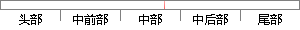

在原始的底层存储中，一维数组的值即是采集到的数据。
片段位置图

相似结果|
相似片段 1：图像的变化比较快，所以要比较快的采集速度。为了保存下采集到的原始图像，使用了一个数组来存储采集的的图像数据，采用保存算法是循环保存，即当数组存满以后，就把前面的覆盖掉，算法描述如图3-4所示。所得的原始
|
※ 片段修改建议 ※
近似词参考：- 即是：便是 等于
- 采集：收集 收罗
系统自动生成语句：在原始的底层存储中，一维数组的值便是收集到的数据。
注：本片段修改建议为系统自动生成，仅供参考。